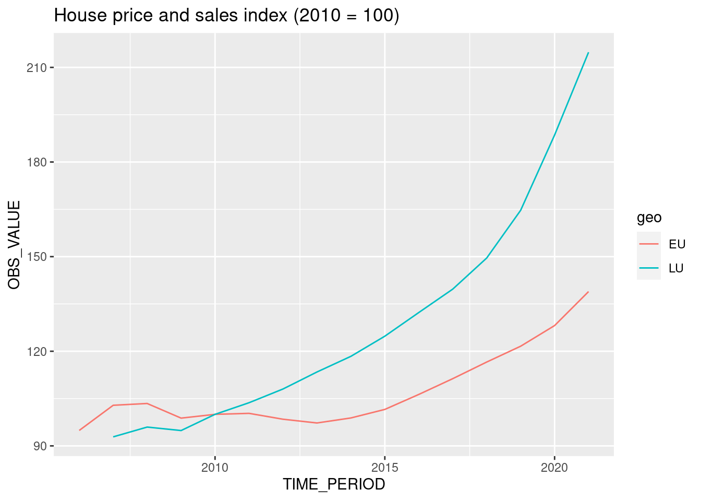

4 Project start
In this chapter, we are going to work together on a very simple project. This project will stay with us until the end of the book. For now, we are going to keep it simple; our goal here is to get an analysis done. We are going to download some data, and analyse it. After we’re done with our analysis, we are going to keep it on the side for some time: we will then learn about tools and new programming paradigms and then rewrite our analysis at the start of the second part of this book using the techniques we’ve learned from part 1.
But for now, our main concern is to get our work done.
4.1 Housing in Luxembourg
We are going to download data about house prices in Luxembourg. Luxembourg is a little Western European country the author hails from that looks like a shoe and is about the size of .98 Rhode Islands. Did you know that Luxembourg is a constitutional monarchy, and not a kingdom like Belgium, but a Grand-Duchy, and actually the last Grand-Duchy in the World? Also, what you should know to understand what we will be doing is that the country of Luxembourg is divided into Cantons, and each Cantons into Communes. If Luxembourg was the USA, Cantons would be States and Communes would be Counties (or Parishes or Boroughs). What’s confusing is that “Luxembourg” is also the name of a Canton, and of a Commune, which also has the status of a city and is the capital of the country. So Luxembourg the country, is divided into Cantons, one of which is called Luxembourg as well, cantons are divided into communes, and inside the canton of Luxembourg there’s the commune of Luxembourg which is also the city of Luxembourg, sometimes called Luxembourg-City, which is the capital of the country.
What you should also know is that the population is about 645.000 as of writing (January 2023), half of which are foreigners. Around 400.000 persons work in Luxembourg, of which half do not live in Luxembourg; so every morning from Monday to Friday, 200.000 people enter the country to work, and leave in the evening to go back to either Belgium, France or Germany, the neighbouring countries. As you can imagine, this puts enormous pressure on the transportation system and on the roads, but also on the housing market; everyone wants to live in Luxembourg to avoid the horrible daily commute, and everyone wants to live either in the capital city, or in the second largest urban area in the south, in a city called Esch-sur-Alzette.
The plot below shows the value of the House Price Index through time for Luxembourg and the European Union:
If you want to download the data, click here.
Let us paste the definition of the HPI in here (taken from the HPI’s metadata page):
The House Price Index (HPI) measures inflation in the residential property market. The HPI captures price changes of all types of dwellings purchased by households (flats, detached houses, terraced houses, etc.). Only transacted dwellings are considered, self-build dwellings are excluded. The land component of the dwelling is included.
So from the plot, we can see that the price of dwellings more than doubled between 2010 and 2021; the value of the index is 214.81 in 2021 for Luxembourg, and 138.92 for the European Union as a whole.
There is a lot of heterogeneity though; the capital and the communes immediately next to the capital are much more expensive than communes from the less densely populated north, for example. The south of the country is also more expensive than the north, but not as much as the capital and surrounding communes. Not only is price driven by demand, but also by scarcity; in 2021, .5% of residents owned 50% of the buildable land for housing purposes (Source: Observatoire de l’Habitat, Note 29, archived download link).
Our project will be quite simple; we are going to download some data, supplied as an Excel file, compiled by the Housing Observatory (Observatoire de l’Habitat, a service from the Ministry of Housing, which monitors the evolution of prices in the housing market, among other useful services like the identification of vacant lots). The advantage of their data when compared to Eurostat’s data is that the data is disaggregated by commune. The disadvantage is that they only supply nominal prices, and no index. Nominal prices are the prices that you read on price tags in shops. The problem with nominal prices is that it is difficult to compare them through time. Ask yourself the following question: would you prefer to have had 500€ (or USDs) in 2003 or in 2023? You probably would have preferred them in 2003, as you could purchase a lot more with $500 then than now. In fact, according to a random inflation calculator I googled, to match the purchasing power of $500 in 2003, you’d need to have $793 in 2023 (and I’d say that we find very similar values for €). But it doesn’t really matter if that calculation is 100% correct: what matters is that the value of money changes, and comparisons through time are difficult, hence why an index is quite useful. So we are going to convert these nominal prices to real prices. Real prices take inflation into account and so allow us to compare prices through time. So we will need to also get some data to achieve this.
So to summarise; our goal is to:
- Get data trapped inside an Excel file into a neat data frame;
- Convert nominal to real prices using a simple method;
- Make some tables and plots and call it a day (for now).
We are going to start in the most basic way possible; we are simply going to write a script and deal with each step separately.
4.2 Saving trapped data from Excel
Getting data from Excel into a tidy data frame can be very tricky. This is because very often, Excel is used as some kind of dashboard, or presentation tool. So data is made human-readable, in contrast to machine readable. Let us quickly discuss this topic as it is essential to grasp the difference between the two (and in our experience, a lot of collective pain inflicted to statisticians and researchers could have been avoided if this concept was more well-known). The picture below shows an Excel made for human consumption:
So why is this file not machine-readable? Here are some issues:
- The table does not start in the top-left corner of the spreadsheet, which is where most importing tools expect it to be;
- The spreadsheet starts with a header that contains an image and some text;
- Numbers are text and use “,” as the thousands separator;
- You don’t see it in the screenshot, but each year is in a separate sheet.
That being said, this Excel file is still very tame, and going from this Excel to a tidy data frame will not be too difficult. In fact, we suspect that whoever made this Excel file is well aware of the contradicting requirements of human and machine readable formatting of data, and strove to find a compromise. Because more often than not, getting human readable data into a machine readable formatting is a nightmare.
This is actually the file that we are going to use for our project, so if you want to follow along, you can download it here (downloaded on January 2023 from the luxembourguish open data portal). But you don’t need to follow along with code, because I will link the scripts for you to download later.
Each sheet contains a dataset with the following columns:
- Commune: the commune
- Nombre d’offres: the total number of selling offers
- Prix moyen annoncé en Euros courants: Average selling price in nominal Euros
- Prix moyen annoncé au m2 en Euros courants: Average selling price in square meters in nominal Euros
For ease of presentation, we are going to show you each function here separately, but we’ll be putting everything together in a single script once we’re done explaining each step. So first, let’s read in the data. The following lines do just that:
library(dplyr)
Attaching package: 'dplyr'The following objects are masked from 'package:stats':
filter, lagThe following objects are masked from 'package:base':
intersect, setdiff, setequal, unionlibrary(purrr)
library(readxl)
library(stringr)
library(janitor)
Attaching package: 'janitor'The following objects are masked from 'package:stats':
chisq.test, fisher.testThe code below downloads the data, and puts it in a data frame:
url <- "https://github.com/b-rodrigues/rap4all/raw/master/datasets/vente-maison-2010-2021.xlsx"
raw_data <- tempfile(fileext = ".xlsx")
download.file(url, raw_data)
sheets <- excel_sheets(raw_data)
read_clean <- function(..., sheet){
read_excel(..., sheet = sheet) |>
mutate(year = sheet)
}
raw_data <- map(
sheets,
~read_clean(raw_data,
skip = 10,
sheet = .)
) |>
bind_rows() |>
clean_names()New names:
• `*` -> `*...3`
• `*` -> `*...4`raw_data <- raw_data |>
rename(
locality = commune,
n_offers = nombre_doffres,
average_price_nominal_euros = prix_moyen_annonce_en_courant,
average_price_m2_nominal_euros = prix_moyen_annonce_au_m2_en_courant,
average_price_m2_nominal_euros = prix_moyen_annonce_au_m2_en_courant
) |>
mutate(locality = str_trim(locality)) |>
select(year, locality, n_offers, starts_with("average"))If you are familiar with the {tidyverse} the above code should be quite easy to follow. We start by downloading the raw Excel file and save the sheet names into a variable. We then use a function called read_clean(), which takes the path to the Excel file and the sheet names as an argument to read the required sheet into a data frame. We use skip = 10 to skip the first 10 lines in each Excel sheet because the first 10 lines contain a header. The last thing this function does is add a new column called year which contains the year of the data. We’re lucky, because the sheet names are the years: “2010”, “2011” and so on. We then map this function to the list of sheet names, thus reading in all the data from all the sheets into one list of data frames. We then use bind_rows(), to bind each data frame into a single data frame, by row. Finally, we rename the columns (by translating their names from French to English) and only select the required columns. If you don’t understand each step of what is going on, don’t worry too much about it; this book is not about learning how to use R.
Running this code results in a neat data set:
str(raw_data)tibble [1,343 × 5] (S3: tbl_df/tbl/data.frame)
$ year : chr [1:1343] "2010" "2010" "2010" "2010" ...
$ locality : chr [1:1343] "Bascharage" "Beaufort" "Bech" "Beckerich" ...
$ n_offers : num [1:1343] 192 266 65 176 111 264 304 94 119 70 ...
$ average_price_nominal_euros : chr [1:1343] "593698.31000000006" "461160.29" "621760.22" "444498.68" ...
$ average_price_m2_nominal_euros: chr [1:1343] "3603.57" "2902.76" "3280.51" "2867.88" ...But there’s a problem: columns that should be of type numeric are of type character instead (average_price_nominal_euros and average_price_m2_nominal_euros). There’s also another issue, which you would eventually catch as you would be exploring the data: naming of the communes is not consistent. Let’s take a look:
raw_data |>
filter(grepl("Luxembourg", locality)) |>
count(locality)# A tibble: 2 × 2
locality n
<chr> <int>
1 Luxembourg 9
2 Luxembourg-Ville 2We can see that the city of Luxembourg is spelled in two different ways. It’s the same with another commune, Pétange:
raw_data |>
filter(grepl("P.tange", locality)) |>
count(locality)# A tibble: 2 × 2
locality n
<chr> <int>
1 Petange 9
2 Pétange 2So sometimes it is spelled correctly, with an “é”, sometimes not. Let’s write some code to correct this:
raw_data <- raw_data |>
mutate(locality = ifelse(grepl("Luxembourg-Ville", locality),
"Luxembourg",
locality),
locality = ifelse(grepl("P.tange", locality),
"Pétange",
locality)
) |>
mutate(across(starts_with("average"), as.numeric))Warning in mask$eval_all_mutate(quo): NAs introduced by coercion
Warning in mask$eval_all_mutate(quo): NAs introduced by coercionNow this is interesting – converting the average columns to numeric resulted in some NA values. Let’s see what happened:
raw_data |>
filter(is.na(average_price_nominal_euros))# A tibble: 290 × 5
year locality n_off…¹ avera…² avera…³
<chr> <chr> <dbl> <dbl> <dbl>
1 2010 Consthum 29 NA NA
2 2010 Esch-sur-Sûre 7 NA NA
3 2010 Heiderscheid 29 NA NA
4 2010 Hoscheid 26 NA NA
5 2010 Saeul 14 NA NA
6 2010 <NA> NA NA NA
7 2010 <NA> NA NA NA
8 2010 Total d'offres 19278 NA NA
9 2010 <NA> NA NA NA
10 2010 Source : Ministère du Logement - Observatoire … NA NA NA
# … with 280 more rows, and abbreviated variable names ¹n_offers,
# ²average_price_nominal_euros, ³average_price_m2_nominal_eurosIt turns out that there are no prices for certain communes, but that we also have some rows with garbage in there. Let’s go back to the raw data to see what this is about:
So it turns out that indeed, there are some rows that we need to remove. We can start by removing rows where locality is missing. Then we have a row where locality is equal to “Total d’offres”. This is simply the total of every offer from every commune. We could keep that in a separate data frame, or even remove it. Finally there’s a row, the last one, that states the source of the data, which we can remove.
In the screenshot above, we see another row that we don’t see in our filtered data frame: one where n_offers is missing. This row gives the national average for columns average_prince_nominal_euros and average_price_m2_nominal_euros. What we are going to do is create two datasets: one with data on communes, and the other on national prices. Let’s first remove the rows stating the sources:
raw_data <- raw_data |>
filter(!grepl("Source", locality))Let’s now only keep the communes in our data:
commune_level_data <- raw_data |>
filter(!grepl("nationale|offres", locality),
!is.na(locality))And let’s create a dataset with the national data as well:
country_level <- raw_data |>
filter(grepl("nationale", locality)) |>
select(-n_offers)
offers_country <- raw_data |>
filter(grepl("Total d.offres", locality)) |>
select(year, n_offers)
country_level_data <- full_join(country_level, offers_country) |>
select(year, locality, n_offers, everything()) |>
mutate(locality = "Grand-Duchy of Luxembourg")Joining, by = "year"Now the data looks clean, and we can start the actual analysis… or can we? Before proceeding, it would be nice to make sure that we got every commune in there. For this, we need a list of communes from Luxembourg. Thankfully, Wikipedia has such a list.
Let’s scrape and save this list:
current_communes <- "https://en.wikipedia.org/wiki/List_of_communes_of_Luxembourg" |>
rvest::read_html() |>
rvest::html_table() |>
purrr::pluck(1) |>
janitor::clean_names()We scrape the table from the Wikipedia page using {rvest}. rvest::html_table() returns a list of tables from the Wikipedia table, and then we use purrr::pluck() to keep the first table from the website, which is what we need (I made the calls to the packages explicit, because you might not be familiar with these packages). janitor::clean_names() transforms column names written for human eyes into machine friendly names (for example Growth rate in % would be transformed to growth_rate_in_percent).
Let’s see if we have all the communes in our data:
setdiff(unique(commune_level_data$locality), current_communes$commune) [1] "Bascharage" "Boevange-sur-Attert" "Burmerange"
[4] "Clémency" "Consthum" "Ermsdorf"
[7] "Erpeldange" "Eschweiler" "Heiderscheid"
[10] "Heinerscheid" "Hobscheid" "Hoscheid"
[13] "Hosingen" "Luxembourg" "Medernach"
[16] "Mompach" "Munshausen" "Neunhausen"
[19] "Redange-sur-Attert" "Rosport" "Septfontaines"
[22] "Tuntange" "Wellenstein" "Kaerjeng" We see many communes that are in our commune_level_data, but not in current_communes. There’s one obvious reason: differences in spelling, for example, “Kaerjeng” in our data, but “Käerjeng” in the table from Wikipedia. But there’s also a less obvious reason; since 2010, several communes have merged into new ones. So there are communes that are in our data, say, in 2010 and 2011, but disappear from 2012 onwards. So we need to do several things: first, get a list of all existing communes from 2010 onwards, and then, harmonise spelling. Here again, we can use a list of Wikipedia:
former_communes <- "https://en.wikipedia.org/wiki/Communes_of_Luxembourg#Former_communes" |>
rvest::read_html() |>
rvest::html_table() |>
purrr::pluck(3) |>
janitor::clean_names() |>
dplyr::filter(year_dissolved > 2009)
former_communes# A tibble: 20 × 3
name year_dissolved reason
<chr> <int> <chr>
1 Bascharage 2011 merged to form Käerjeng
2 Boevange-sur-Attert 2018 merged to form Helperknapp
3 Burmerange 2011 merged into Schengen
4 Clemency 2011 merged to form Käerjeng
5 Consthum 2011 merged to form Parc Hosingen
6 Ermsdorf 2011 merged to form Vallée de l'Ernz
7 Eschweiler 2015 merged into Wiltz
8 Heiderscheid 2011 merged into Esch-sur-Sûre
9 Heinerscheid 2011 merged into Clervaux
10 Hobscheid 2018 merged to form Habscht
11 Hoscheid 2011 merged to form Parc Hosingen
12 Hosingen 2011 merged to form Parc Hosingen
13 Mompach 2018 merged to form Rosport-Mompach
14 Medernach 2011 merged to form Vallée de l'Ernz
15 Munshausen 2011 merged into Clervaux
16 Neunhausen 2011 merged into Esch-sur-Sûre
17 Rosport 2018 merged to form Rosport-Mompach
18 Septfontaines 2018 merged to form Habscht
19 Tuntange 2018 merged to form Helperknapp
20 Wellenstein 2011 merged into Schengen As you can see, since 2010 many communes have merged to form new ones. We can now combine the list of current and former communes, as well as harmonise their names:
communes <- unique(c(former_communes$name, current_communes$commune))
# we need to rename some communes
# Different spelling of these communes between wikipedia and the data
communes[which(communes == "Clemency")] <- "Clémency"
communes[which(communes == "Redange")] <- "Redange-sur-Attert"
communes[which(communes == "Erpeldange-sur-Sûre")] <- "Erpeldange"
communes[which(communes == "Luxembourg-City")] <- "Luxembourg"
communes[which(communes == "Käerjeng")] <- "Kaerjeng"
communes[which(communes == "Petange")] <- "Pétange"Let’s run our test again:
setdiff(unique(commune_level_data$locality), communes)character(0)Great! When we compare the communes that are in our data with every commune that has existed since 2010, we don’t have any commune that is unaccounted for. So are we done with cleaning the data? Yes, we can now actually start with analysing the data. Take a look here1 to see the finalised script. Also read some of the comments the we’ve added. This is a typical R script, and at first glance, one might wonder what is wrong with it. Actually, not much, but the problem if you leave this script as it is, is that it is very likely that we will have problems rerunning it in the future. As it turns out, this script is not reproducible. But we will discuss this in much more detail later on. For now, let’s analyse our cleaned data.
4.3 Analysing the data
We are now going to analyse the data. The first thing we are going to do is compute a Laspeyeres price index. This price index allows us to make comparisons through time; for example, the index at year 2012 measures how much more expensive (or cheaper) housing became relative to the base year (2010). However, since we only have one good, this index becomes quite simple to compute: it is nothing but the prices at year t divided by the prices in 2010 (if we had a basket of goods, we would need to use the Laspeyeres index formula to compute the index at all periods).
For this section, we will perform a rather simple analysis. We will immediately show you the R script: take a look at it here2. For our analysis we selected 5 communes and plotted the evolution of prices compared to the national average.
This analysis might seem trivially simple, but it contains all the needed ingredients to illustrate everything else that we’re going to teach you in this book.
Most analyses would stop here: after all, we have what we need; our goal was to get the plots for the 5 communes of Luxemourg, Esch-sur-Alzette, Mamer, Schengen (which gave its name to the Schengen Area) and Wincrange. However, let’s ask ourselves the following important questions:
- How easy would it be for someone else to rerun the analysis?
- How easy would it be to update the analysis once new data gets published?
- How easy would it be to reuse this code for other projects?
- What guarantee do we have that if the scripts get run in 5 years, with the same input data, we get the same output?
Let’s answer these questions one by one.
4.4 Your project is not done
4.4.1 How easy would it be for someone else to rerun the analysis?
The analysis is composed of two R scripts, one to prepare the data, another to actually run the analysis proper. This might seem quite easy, because each script contains comments as to what is going on, and the code is not that complicated. However, we are missing any project-level documentation, that would provide clear instructions as to how to run it. This might seem simple for us who wrote these scripts, but we are familiar with R, and this is still fresh in our brains. Should someone less familiar with R have to run the script, there is no clue for them as to how they should do it. And of course, should the analysis be more complex (suppose it’s composed of a dozens scripts), this gets even worse. It might not even be easy for you to remember how to run this in 5 months!
And what about the required dependencies? Many packages were used in the analysis. How should these get installed? Ideally, the same versions of the packages you used and the same version of R should get used by that person to rerun the analysis.
All of this still needs to get documented, but documenting packages and their versions takes quite some time. Thankfully, in part 2, we will learn about the {renv} package to deal with this in a couple lines of code.
4.4.2 How easy would it be to update the project?
If new data gets published, all the points discussed previously are still valid, plus you need to make sure that the updated data is still close enough to the previous data that it can pass through the data cleaning steps you wrote. You should also make sure that the update did not introduce a mistake in past data, or at least alert you if that is the case. Sometimes, when new years get added, data for previous years also get corrected, so it would be nice to make sure that you know this. Also, in the specific case of our data, communes might get fused into a new one, or maybe even divided into smaller communes (even though this is has not happened in a long time, it is not entirely out of the question).
In summary, what is missing from the current project are enough tests to make sure that an update to the data can happen smoothly.
4.4.3 How easy would it be to reuse this code for another project?
Said plainly, not very easy. With code in this state you have no choice but to copy and paste it into a new script and change it adequately. For re-usability, nothing beats structuring your code into functions and ideally you would even package them. We are going to learn just that in future chapters of this book.
But sometimes you might not be interested in reusing code for another project: however, even if that’s the case, structuring your code into functions and packaging them makes it easy to reuse even inside the same project. Look at the last part of the analysis.R script: we copy and pasted the same code 5 times and only slightly changed it. We are going to learn how not to repeat ourselves by using functions and you will immediately see the benefits of writing functions, even when simply to reuse inside the same project.
4.4.4 What guarantee do we have that the output is stable through time?
Now this might seem weird: after all, if we start from the same dataset, does it matter when we run the scripts? We should be getting the same result if we build the project today, in 5 months or in 5 years. Well, not necessarily. While it is true that R is quite stable, this cannot necessarily be said of the packages that get used. There is no guarantee that the authors of the packages will not change the package’s functions to work differently, or take arguments in a different order, or even that the packages will all be available at all in 5 years. And even if the packages are still available and function the same, bugs in the packages might get corrected that could alter the result. This might seem like a non-problem; after all, if bugs get corrected, shouldn’t you be happy to update your results as well? But this depends on what it is we’re talking about. Sometimes it is necessary to reproduce results exactly as they were, even if it they were wrong, for example in the context of an audit.
So we also need a way to somehow snapshot and freeze the computational environment that was used to create the project originally.
4.5 Conclusion
We now have a basic analysis that has all we need to get started. In the coming chapters, we are going to learn about topics that will make it easy to write code that is more robust, better documented and tested, and most importantly easy to rerun (and thus to reproduce the results). The first step will actually not involve having to start rewriting our scripts though; next we are going to learn about Git, a tool that will make our life easier by versioning our code.